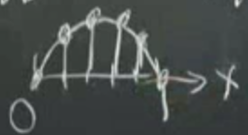
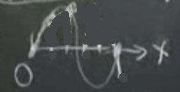

Ders 1.6
Özvektör formülüne tekrar bakalım
$$ Ay = \lambda y $$
Şimdi tüm özvektörler aynı anda tek bir matris içinde olacak şekilde üstteki formülün her özvektör için işleyecek "kombine" bir halini yazabiliriz. $y_i$ vektörünün tüm bir kolonu kaplayacak şekilde matrise yazıldığını düşünüyoruz.
$$ A \left[\begin{array}{cccc} \uparrow & \uparrow & & \uparrow \\ y_1 & y_2 & ... & y_n \\ \downarrow & \downarrow & & \downarrow \end{array}\right] = \left[\begin{array}{cccc} &&& \\ Ay_1 & Ay_2 & ... & Ay_n \\ &&& \end{array}\right] $$
Buna göre üstteki eşitliğin sağındaki çarpım da mantıklıdır.Peki $Ay_i$ çarpımı tanıdık gelmiyor mu? Çarpım özvektör, özdeğer formülü. O zaman $Ay_i = \lambda y_i$. Demek ki,
$$ \left[\begin{array}{cccc} &&& \\ Ay_1 & Ay_2 & ... & Ay_n \\ &&& \end{array}\right] = \left[\begin{array}{cccc} &&& \\ \lambda_1y_1 & \lambda_2y_2 & ... & \lambda_ny_n \\ &&& \end{array}\right] $$
$\lambda$'ları dışarı çekebiliriz.
$$ = \left[\begin{array}{cccc} &&& \\ y_1 & y_2 & ... & y_n \\ &&& \end{array}\right] \left[\begin{array}{cccc} \lambda_1 &&& \\ & .. && \\ &&& \lambda_n \\ \end{array}\right] $$
$\lambda$ matrisinde $\lambda$ olmayan yerler sıfır değerini taşıyor. Özvektör matrisini $S$ olarak, çaprazında özdeğerleri taşıyan matrisi $\Lambda$ olarak nitelersek
$$ AS = S\Lambda $$
Eğer üstteki $S$ (ya da herhangi bir) matrisinin tüm kolonları birbirinden bağımsız ise $S$ tersine çevirelebilir (invertible) demektir. O zaman şunu yapabiliriz:
$$ A = S \Lambda S^{-1} $$
Bu forma matrisin köşegenleştirilmesi (diagonalization) deniyor.
Biraz zihin egzersizi: $A^2$ ne olur?
$$ A^2 = (S \Lambda S^{-1})(S \Lambda S^{-1}) $$
$$ = S \Lambda S^{-1}S \Lambda S^{-1} $$
ortadaki $S$ ve $S^{-1}$ birbirini iptal eder.
$$ = S \Lambda^2 S^{-1} $$
Bu bana ne söylüyor? $A^2$'nin özvektörleri $A$ ile aynı, çünkü formülün $S$ ve $S^{-1}$ içeren kısmı değişmedi, özdeğerler ise $A$'nin özdeğerlerinin karesi. Bu önceden bulduğumuz $A^2y = \lambda^2y$ sonucu ile uyuşuyor.
Peki, diyelim tersine çevirilebilir ise, $A^{-1}$ nedir? Ana formülden başlayalım
$$ A = S \Lambda S^{-1} $$
Tersine çevirme işlemi eşitliğin sağ tarafında parantezin içinin sırasını değiştirir, sonra tersine çevirir, $S^{-1}$ ile başlarız, onun tersi $S$, vs, ve sonuç
$$ A^{-1} = S \Lambda^{-1}S^{-1} $$
Özvektörler matrislerinin yeri ve içeriği değişmedi. Değişik olan tek şey $\Lambda^{-1}$ ki bu matris içinde $1/\lambda_1$, $1/\lambda_2$, .. gibi değerler olacak. Diğer bir açıdan kontrol edelim:
$$ Ay = \lambda y $$
$$ y = \lambda A^{-1} y $$
$$ \frac{1}{\lambda}y = A^{-1} y $$
Bu üstteki sonuç ile aynı şeyi söylüyor. $A^{-1}$'in tersi aynı $y$ özvektör(ler)e sahip, ve solda olan özdeğer öncekine kıyasla $1/\lambda$ değerinde.
Tabii tüm bunlara başlamadan önce "$\lambda$'nin sıfır olmadığı durumlarda" demeliydim, çünkü bu sıfırlık durum bize $A$'nin tersine çevirilir olmadığı yönünde bir işaret olurdu. Terminoloji olarak bir tane bile sıfır özdeğer $A$ eşsiz (singular) demektir, eğer hiçbiri sıfır değilse $A$ tersine çevirilebilir demektir.
Bir simetrik $K$ matrisini ele alalım, simetrik olduğu için tüm özdeğerleri reel sayılar, ve özvektörleri birbirine dikgen (orthagonal).
Dik yerine normalize edilmiş de diyebilirdik, sayısal paketler çoğunlukla birimselleştirilmiş, yani uzunluğu 1 olan vektörler döndürür, ve özdeğer/vektör ikilisi için zaten yön önemlidir, hem özdeğer hem özvektörü 2 ile çarpıp aynı şeyi elde edebiliriz mesela.
Uzunluktan bahsederken, onu daha önce $y_i^T \cdot y_j$ olarak gösterdik, ki simetrik bir matrisin dik özdeğerleri için bu $y_i^T \cdot y_j = 0, \ i \ne j$. Normalize edilmiş bir özvektörün kendisi ile noktasal çarpımı nedir? $y_i^T \cdot y_i = 1$ çünkü vektör birimsel, uzunluğu 1. Tüm özdeğerleri içeren matris üzerinden bu hesabı yapabilir miyiz? Daha önce yarattığımız şu matris ile başlayalım:
$$ \left[\begin{array}{cccc} \uparrow & \uparrow & & \uparrow \\ y_1 & y_2 & ... & y_n \\ \downarrow & \downarrow & & \downarrow \end{array}\right] $$
sol tarafına devriğini (transpose) koyalım
$$ \left[\begin{array}{ccc} \leftarrow & y_1^T & \rightarrow \\ & ... & \\ \leftarrow & y_n^T & \rightarrow \end{array}\right] \left[\begin{array}{cccc} \uparrow & \uparrow & & \uparrow \\ y_1 & y_2 & ... & y_n \\ \downarrow & \downarrow & & \downarrow \end{array}\right] $$
Bu çarpımı yaparsak sonuç ne olacak? Mesela $y_1^T$ ile $y_1$ çarpımı 1 değerinde, $y_1^T$ ile diğer her çarpım sıfır. Böyle gider. Ve sonuç olarak çaprazında 1 diğer her yerinde 0 içeren birim (identity) matrisini elde ederiz.
Üzerine basarak söyleyelim, bu simetrik matrisler için, çünkü diğer $A$ matrisleri için özvektörlerin hepsinin birbirine dik olmasını bekleyemeyiz.
Devam edelim, o zaman üstteki hesabı kısaca gösterirsek
$$ S^T S = I $$
Bu hakikaten çok önemli bir sonuç.
Üsttekinin doğru olduğu durumlarda $S$ harfini değiştirirsek aslında daha iyi olur böylece özvektör matrisinin bir simetrik $K$ matrisinden geldiğini daha iyi görürüz. Bu durumlarda $Q$ harfini kullanalım.
$Q$'ye bir "dik matris" te denebilir, çünkü $Q^TQ = I$. Bu ifadeye bakarak başka bir şey daha söyleyebiliriz, $Q$'yu başka ne soldan çarparsa sonuç birim matristir? $Q^{-1}$. O zaman $Q^T = Q^{-1}$ de diyebiliriz.
Bir dik matris örneği görelim:
$$ \left[\begin{array}{cc} \cos \theta & -\sin \theta \\ \sin \theta & \cos \theta \\ \end{array}\right] $$
İlk kolona bakalım, uzunluğu hakikaten 1, çünkü $\cos \theta ^2 + \sin \theta ^2 = 1$. Diğer kolon da ona dik, 1. kolon ile çarpılınca sonuç sıfır olacak.
Not: Üstteki matrise "$\theta$ kadar döndüren matris" ismi de verilir, eldeki bir $v$ vektörünü $Q$ ile çarpımı, yani $Qv$, o vektörü uzunluğunu değiştirmeden $\theta$ kadar döndürecektir.
Devam edelim
$$ K = S \Lambda S^{-1} $$
$S$ yerine $Q$ kullanmaya karar vermiştik
$$ K = Q \Lambda Q^{-1} $$
O zaman, daha önceden gördüğümüz eşitlik üzerinden,
$$ K = Q \Lambda Q^{T} $$
Şu güzelliğe bakın. Buna mekanikte asal eksen teoremi (principal axis theorem), matematikte spektral teoremi (spectral theorem), kuantum mekanikte köşegenleştirme (diagonalization) ismi verilir, her yerde ortaya çıkar, pek çok şekilde kullanılır. Ne zaman elde bir simetrik matris var ise, o zaman üstteki tanım kullanılabilir demektir.
$K$ matrisine geri dönelim.
$$ K = \left[\begin{array}{rrrrr} 2 & -1 &&& \\ -1 & \ddots & \ddots && \\ & \ddots &&& \\ &&&& \\ &&&& \end{array}\right] $$
Bu matris ikinci farklılıkları ayrıksal olarak temsil etmek için kullanılmıştı, esnek çubuğu temsil ettiği zaman sabit / sabit problemini çözüyordu. $K$ sürekli (continuous) bağlamda hangi diferansiyel denklemi temsil edecektir? $-d^2y/dx^2$. Özdeğer, özvektör olarak ise
$$ Ky = \lambda y $$
Şöyle bir geçiş yapılabilir
$$ -\frac{d^2y}{dx^2} = \lambda y(x) $$
Burada ilginç bir numara var: daha önce sürekli fonksiyondan başlıyorduk, sonra $K$ matrisi üzerinden ayrıksal hale geçiriyorduk. Hoca burada özdeğer, özvektör formundan başladı, ve sürekli forma geçti. Sonra üstteki denklemin çözümünü bulunca, tekrar geri gidecek, ve ayrıksal olarak özvektörlerin birbirine dikliğini göreceğiz, ve bunun sürekli bağlamda da hala geçerli olduğunu anlayacağız.
Çözümü bulmak için tahmin yöntemini kullanalım: hangi fonksiyonun ikinci türevinin negatifi, o fonksiyonun katını verir? Sin ve cos fonksiyonları, yani $y$ $\sin \omega x$, $\cos \omega x$ olabilir, ya da onların birleşimi olarak üstel $e^{-i\omega x}$, $e^{i\omega x}$ formunda olabilir.
Eğer $y$ için $\sin, \cos$ kullanırsak özdeğer ne olur? Yerine koyarsak görürüz, $\sin\omega x$'in iki kere türevini alırsak $\omega$ iki kere dışarı çıkar, arada bir eksi değeri mutlaka ortaya çıkar (çünkü $\cos'\theta = -\sin\theta)$, eksi ile eksi çarpılır, sonuç $\omega^2$. Hatta üstteki tüm $y$ seçenekleri için sonuç aynıdır.
Sınır koşullarını unutmayalım tabii. Problemin tamamı
$$ -\frac{d^2y}{dx^2} = \lambda y(x) $$
$$ y(0) = 0, \ y(1) = 0 $$
Sınır koşulları sayesinde tüm $\sin$, tüm $\cos$ fonksiyonları arasından belli bazılarını seçebileceğiz. En basit eleme $y(0) = 0$, bu şart sayesinde cos fonksiyonlarının tamamı elenir. Değil mi? Çünkü $\cos(0) = 0$ doğru olamaz. Diğer şarta bakalım, $y(1)$ üzerinden $\sin(\omega) = 0$ olur, tersinden düşünürsek $\sin(\omega)$ ile sıfır değeri verecek $\omega$ ne olabilir? $\pi$ olabilir. O zaman bir çözüm bulduk:
$$ y_1 = \sin \pi x $$
Elimizdeki ilk "özfonksiyon (eigenfunction)" bu. Özdeğeri nedir?
$$ \lambda_1 = \pi^2 $$
çünkü üstte belirttik, $\omega^2$, o zaman $\pi^2$.
İkinci değer ne olur? $2\pi$.
$$ y_2 = sin2\pi x, \ \lambda_2 = (2\pi)^2 = 4\pi^2 $$
Eğer sınır şartlarını değiştirseydim, serbest / serbest, serbest / sabit gibi, o zaman farklı $y$ değerleri elde ederdim. Mesela ilk sınır şartı $y'(0) = 0$ olsaydı, sin fonksiyonları yerine cos fonksiyonları elde ederdik, sin elenirdi çünkü sin'in türevi $\cos(0) = 0$ doğru bir ifade olamazdı.
Ayrıksal olarak temsil edersek, $\sin\pi h$ ve $h = 1 / n+1$, $n = 4$ kullanalım
$$ y_1 = \left[\begin{array}{c} \sin \frac{\pi}{5} \\ \sin \frac{2\pi}{5} \\ \sin \frac{3\pi}{5} \\ \sin \frac{4\pi}{5} \end{array}\right] $$

Bu da ikinci özvektör (özfonksiyon).
$$ y_2 = \left[\begin{array}{c} sin \frac{2\pi}{5} \\ sin \frac{4\pi}{5} \\ sin \frac{6\pi}{5} \\ sin \frac{8\pi}{5} \end{array}\right] $$

Özvektörler olduğunu söylemekle ikinci bir şey daha söylüyoruz, bu iki vektör birbirine dik. Buradan hareketle $\sin(\pi x)$ fonksiyonu (iki üstteki resim) $\sin(2\pi x)$ fonksiyonuna (bir üstteki resim) dik diyebilirdik, ki hakikaten öyledir. Hatta bu matematiksel durum Fourier Serilerinin işlemesini sağlayan önemli bir etkendir.
Bu bağlantıdan devam edelim: pür vektörler olduğu zaman diklik kontrolü için $y_1^T \cdot y_2$ diyordum, ve $y_1$ ve $y_2$'nin eşleşen elemanları birbiriyle çarpılıp, bu sonuçlar teker teker toplanıyordu. Elimde $y_1$ ve $y_2$ için birer fonksiyon var ise, bir tarafta $\sin(\pi x)$ var, her $x$ için değişik değerler veriyor, diğer tarafta $\sin(2\pi x)$ var, bunları çarpıp toplamam lazım. Ama elimde teker teker toplayabileceğim değerler olmadığı için ($x$ reel bir sayıdır, belli bir aralıkta bile sonsuz tane değere sahip olabilir), o zaman toplama yerine entegrasyon kullanmam lazım. O zaman
$$ y_1^T \cdot y_2 = \int_0^1 (\sin \pi x)(\sin 2\pi x) \mathrm{d} x $$
Sonuç sıfır gelecek, çünkü iki fonksiyon birbirine dik.
Soru 1.5.3
import scipy.linalg as lin
def ktbc(n):
vec = np.zeros((1,n))
vec[0,0] = 2
vec[0,1] = -1
K = lin.toeplitz(vec)
T = np.copy(K)
T[0,0] = 1
B = np.copy(K)
B[0,0] = 1
B[n-1,n-1] = 1
C = np.copy(K)
C[n-1,n-1] = 1
return K, T, B, C
import scipy.linalg as lin
import ktbc
K,T,B,C = ktbc.ktbc(5)
u,v=lin.eig(K)
print u
print 2-np.sqrt(3), 2-1, 2-0, 2+1, 2+np.sqrt(3)
print 2*np.ones((5,1)).T - 2*np.cos((np.arange(5)+1) * np.pi/6)
[ 3.73205081+0.j 3.00000000+0.j 2.00000000+0.j 0.26794919+0.j
1.00000000+0.j]
0.267949192431 1 2 3 3.73205080757
[[ 0.26794919 1. 2. 3. 3.73205081]]